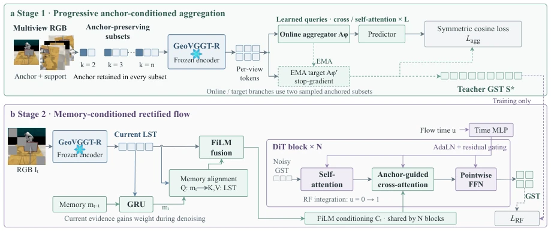
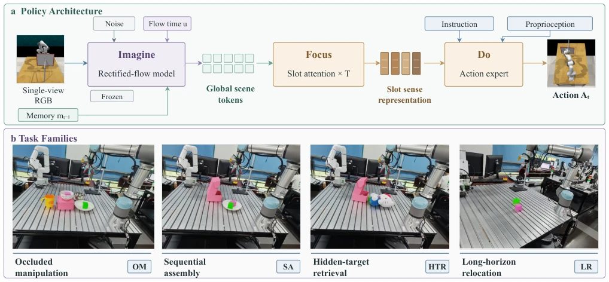
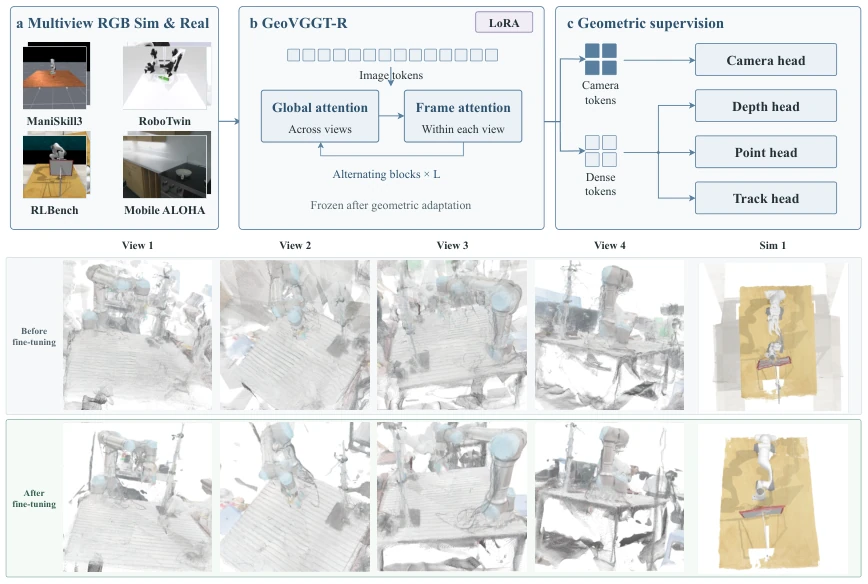
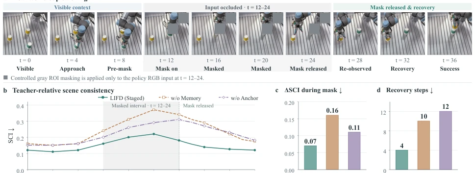

This paper equips monocular RGB manipulation with a 'generative completion' function, attempting to use generative memory to solve occlusion and view loss. The core is to distill a 'teacher' model from multi-views, relying on the current frame and historical memory to 'guess' the global scene during inference. Although claimed to be 3D-aware, the essence is latent space tokens, do not expect it to output meter-scale coordinates. SCI metrics also depend on the teacher model, having a bit of a 'self-justification' flavor. Staged training is more stable than Joint, in physical experiments the LR task still collapsed, indicating long-horizon planning remains a fatal flaw. The overall idea is clear, but the word '3D' is slightly marketing-oriented, actually it is latent space consistency maintenance. However, it indeed topped the leaderboard on LIBERO and MetaWorld, indicating this implicit memory is very useful for policy learning, only the physical deployment cost is slightly high, inference latency still reaches 190ms at 50 steps, real-time performance needs optimization.
Robot manipulation often encounters occlusion or limited views, single-frame RGB information is insufficient, leading to policy failure. Existing methods such as PerAct [1] or 3D Diffusion [2] mostly rely on explicit geometry or pure action diffusion, lacking persistent scene memory. World models [8] can predict dynamics, but LIFD aims to complete implicit memory through generative completion, solving the fusion problem of historical observations and current evidence, avoiding explicit reconstruction error accumulation. Especially for occluded manipulation, how to infer global state from local observations is key, existing VLA models often ignore this, leading to poor performance on Occluded Manipulation tasks. Additionally, traditional methods struggle to handle state drift in long-horizon tasks, needing more robust scene representations to maintain consistency of environmental understanding.
方法Method
整体分两阶段。先用GeoVGGT-R [4] 编码多视图，Anchor-conditioned aggregation 聚合多视角token，通过自蒸馏对齐不同子集，使用EMA更新目标网络。推理时，GRU 维护历史记忆，结合当前LST，经FiLM融合与Anchor-Guided Cross-Attention (AGCA) 引导，通过Rectified Flow [19] 从噪声生成全局场景Token (GST)。AGCA确保当前视图始终作为锚点，防止记忆漂移。最后Slot Attention [34] 压缩为动作策略。Staged训练冻结感知模块，仅微调策略，保证表征稳定性。Flow time u 从0到1逐步增加当前视觉权重，实现平滑过渡。损失函数包括对称余弦距离和RF匹配损失，确保生成token与老师一致。
Overall divided into two stages. First encode multi-views using GeoVGGT-R [4], Anchor-conditioned aggregation aggregates multi-view tokens, aligning different subsets through self-distillation, using EMA to update the target network. During inference, GRU maintains historical memory, combining with current LST, via FiLM fusion and Anchor-Guided Cross-Attention (AGCA) guidance, generating Global Scene Tokens (GST) from noise via Rectified Flow [19]. AGCA ensures the current view always serves as an anchor, preventing memory drift. Finally, Slot Attention [34] compresses into action policy. Staged training freezes the perception module, only fine-tunes the policy, ensuring representation stability. Flow time u gradually increases current visual weight from 0 to 1, achieving smooth transition. Loss functions include symmetric cosine distance and RF matching loss, ensuring generated tokens are consistent with the teacher.

Fig. 1. Staged representation learning. (a) Anchor-conditioned aggregation and self-distillation learn multi-view scene tokens. (b) Rectified flow completes them from current evidence and memory, progressing from noise at u = 0 to teacher GST at u = 1.

Fig. 2. Policy and physical tasks. (a) Imagine completes scene tokens, Focus condenses them into slots, and Do predicts actions. (b) UR5e task families: Occluded Manipulation (OM), Sequential Assembly (SA), Hidden-Target Retrieval (HTR), and Long-Horizon Relocation (LR).

Fig. 4. GeoVGGT-R. Top: geometric supervision of camera and dense tokens. Bottom: qualitative reconstructions before and after adaptation from four real views and one simulated scene.
Tested on LIBERO, MetaWorld, and RoboTwin 2.0. LIFD (Staged) achieves 91.6% average success rate on LIBERO, outperforming OpenVLA-7B [38] and Diffusion Policy [15]. Physical UR5e experiments show that the memory module can significantly reduce the SCI contradiction index and accelerate recovery during occlusion. Ablation experiments prove Anchor and Memory are indispensable. But LR task success rate is only 28%, long-horizon tasks remain a bottleneck. Compared to Joint training, Staged performs better in generalization, proving the value of representation-first learning. Significant improvement on UR5e OM and SA tasks, but limited gain on HTR, indicating different tasks have different dependency levels on memory.

Fig. 3. Real-world controlled occlusion. A fixed gray ROI masks only the policy RGB input at steps 12–24 and is released immediately after step 24. (a) Keyframes through recovery and success. (b) Stepwise teacher-relative SCI. (c) Contradiction increase during masking. (d) Recovery steps after release. Summary definitions are in Appendix B.